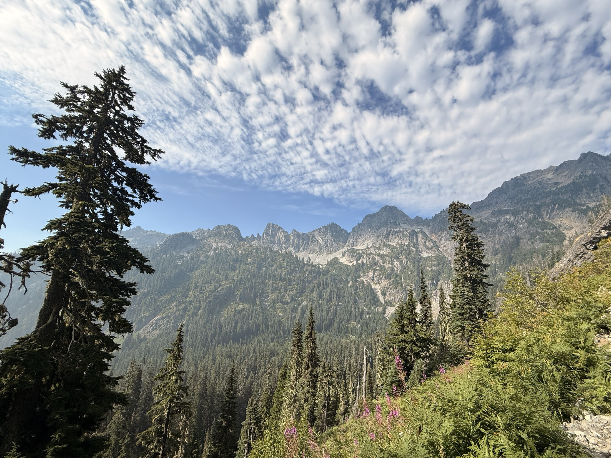
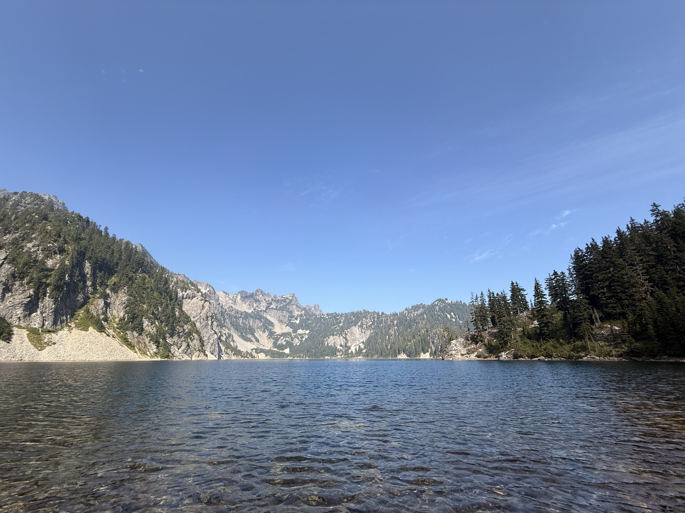
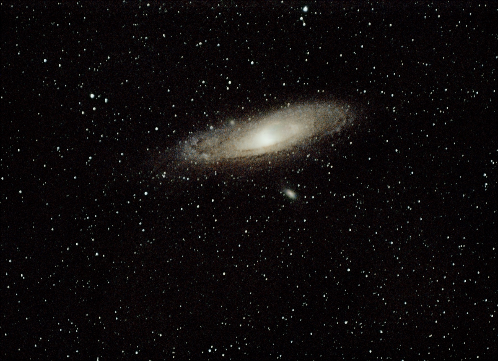
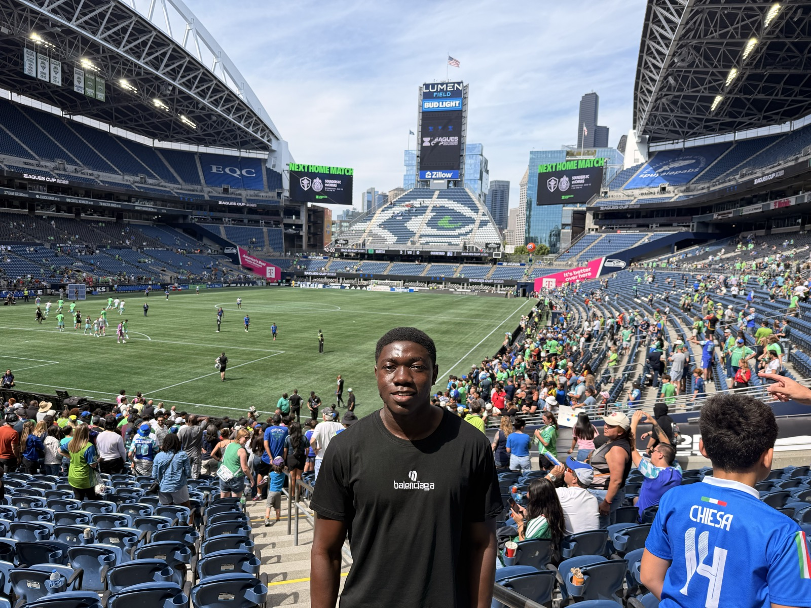
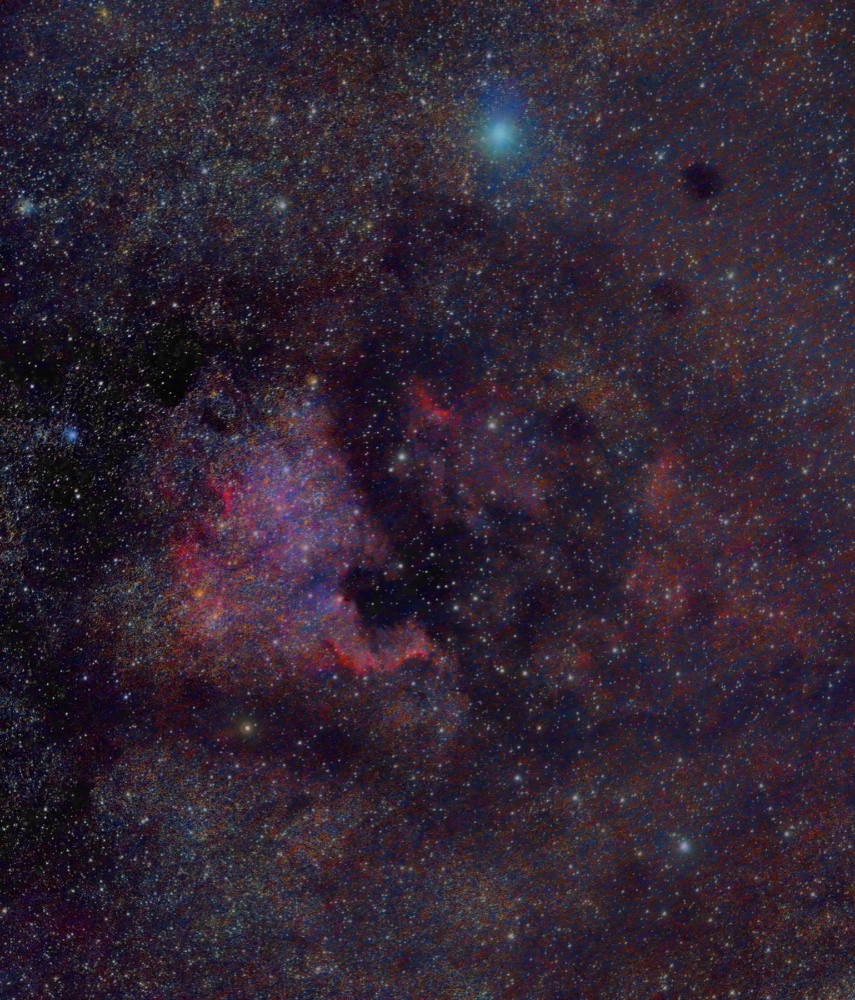
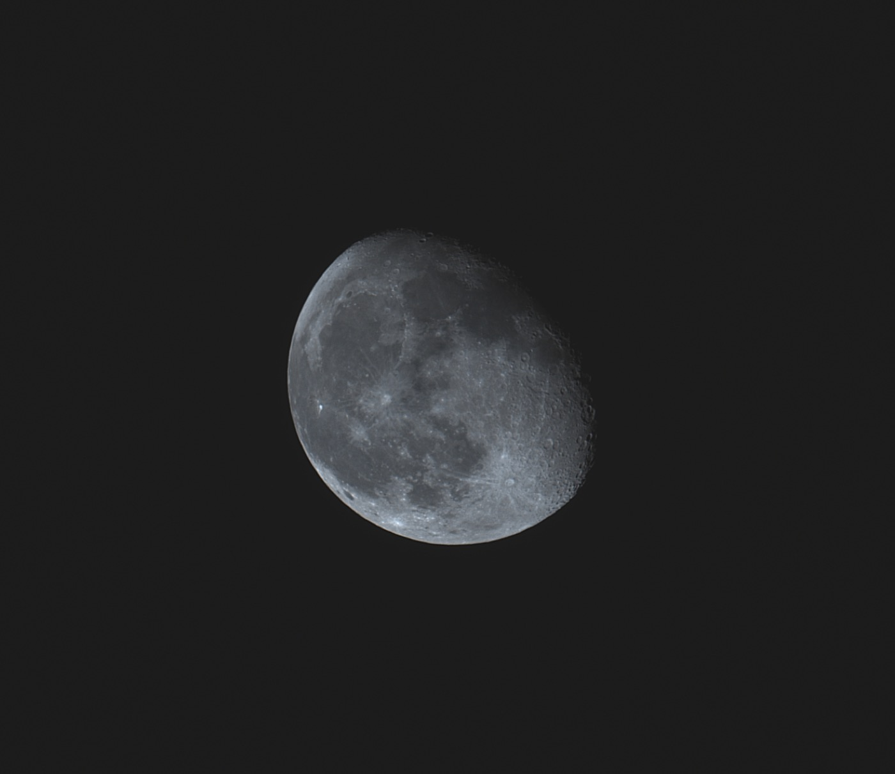

I am a computer science student at Cornell University interested in backend systems, programming languages, distributed infrastructure, and applied research.
My work spans compiler design, query optimization, distributed caching systems, and research tools for bioacoustic source separation and localization. I have worked across industry and academia through roles at Amazon Web Services, Meta, Cornell Lab of Ornithology, Bovi-Analytics, and Culture Care.
I also enjoy teaching and have supported Cornell courses in introductory programming and calculus.
Curriculum Vitae
My CV includes software engineering experience, research work, teaching, selected projects, coursework, and technical skills.
Interests
Outside of technical work, I enjoy soccer, sports, astrophotography, and African art.

Astrophotography

